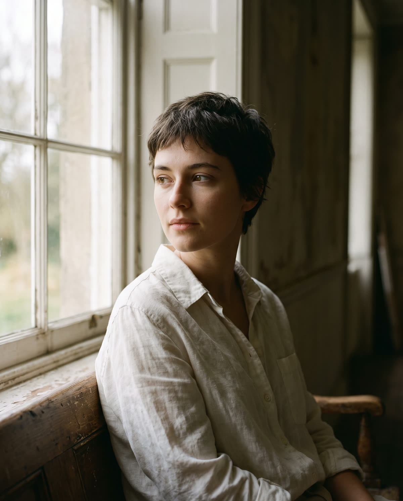
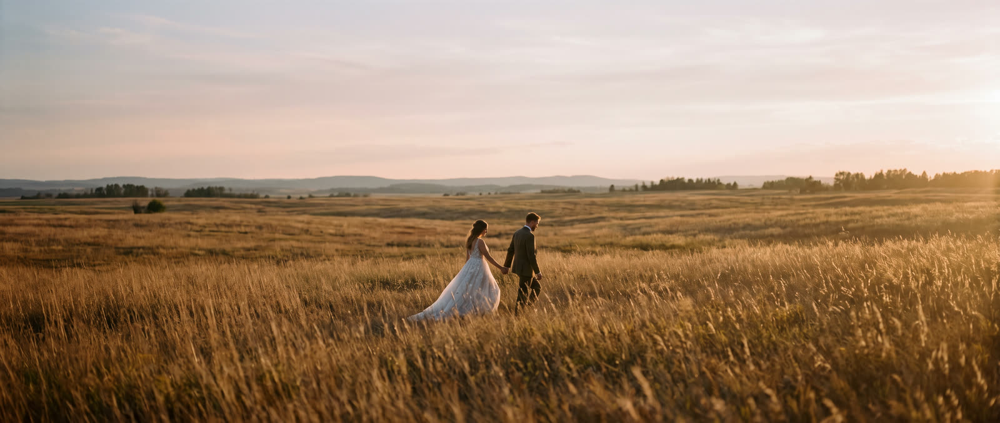
Fotografiez nunți, cupluri și portrete, în Timișoara și în toată țara.
Lucrez cu lumina pe care o găsesc și cu oamenii așa cum sunt. Primești fotografiile editate într-o galerie online, gata de descărcat și de printat.
Verifică data taServicii
Prețuri de pornire, oferta finală în scris
Nunți
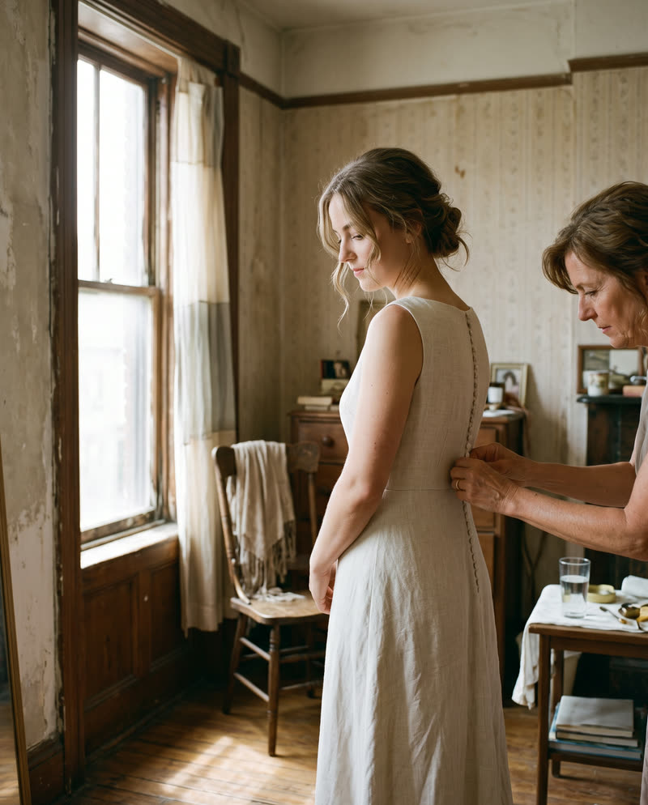
- De la pregătiri până la primul dans
- 400–700 de fotografii editate, în 4 săptămâni
- Opțional: a doua cameră, album tipărit
de la3.500 lei
Cupluri
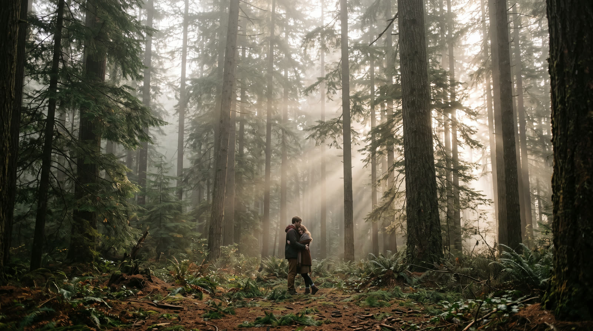
- Logodnă sau aniversare, două ore
- În oraș sau în natură, locul îl alegem împreună
- 80 de fotografii editate
de la800 lei
Portrete
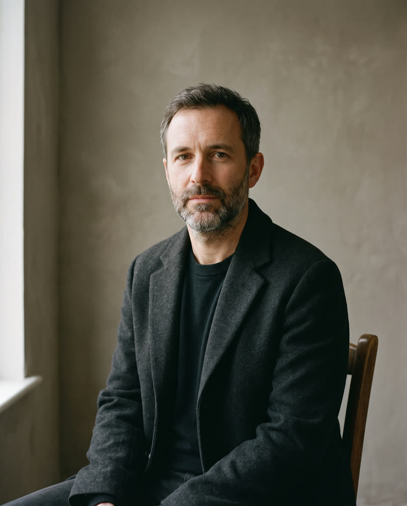
- Pentru tine, pentru CV sau pentru brandul tău
- O oră, la tine sau în lumină naturală
- 15 fotografii editate
de la600 lei
Familie
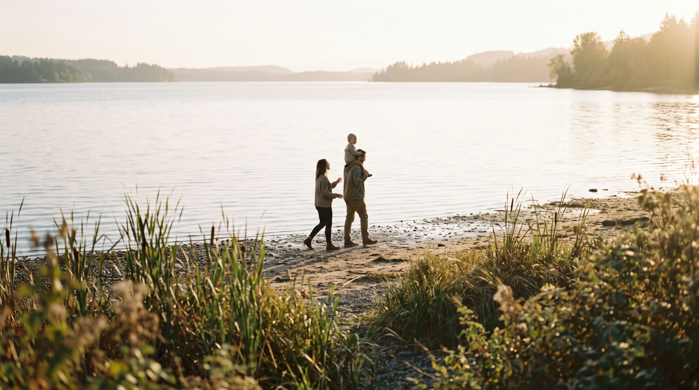
- O oră și jumătate, acasă sau afară
- Copiii se joacă, eu fotografiez
- 60 de fotografii editate
de la700 lei
Lucrări alese
Din nunțile și ședințele din 2025
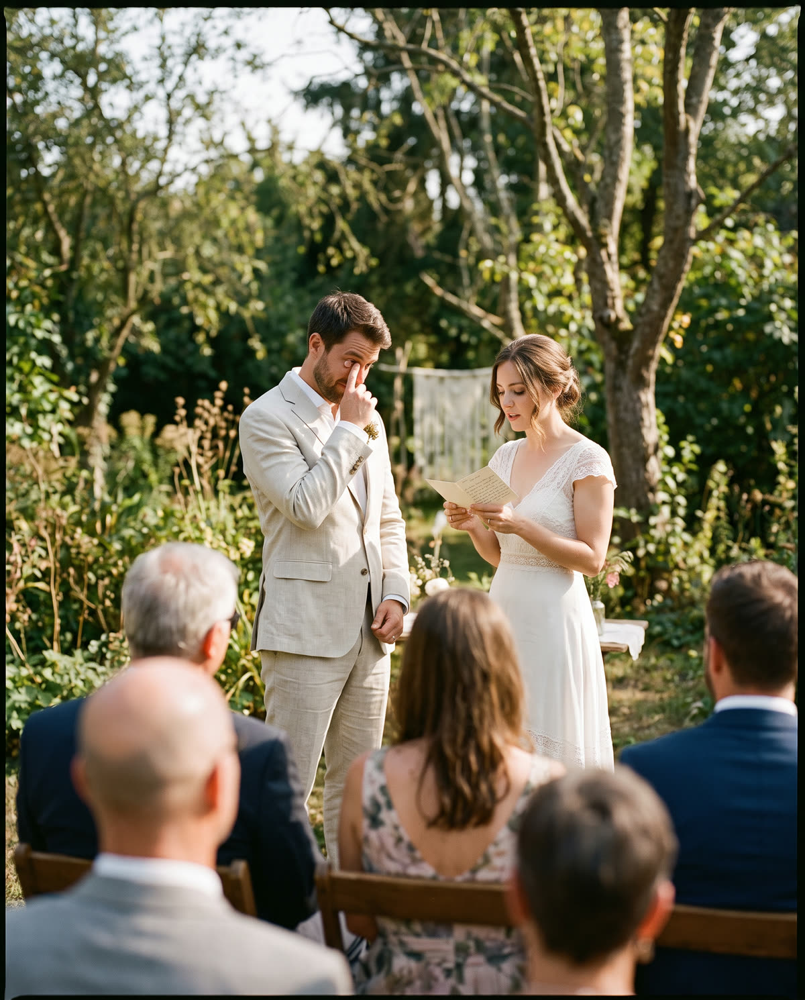
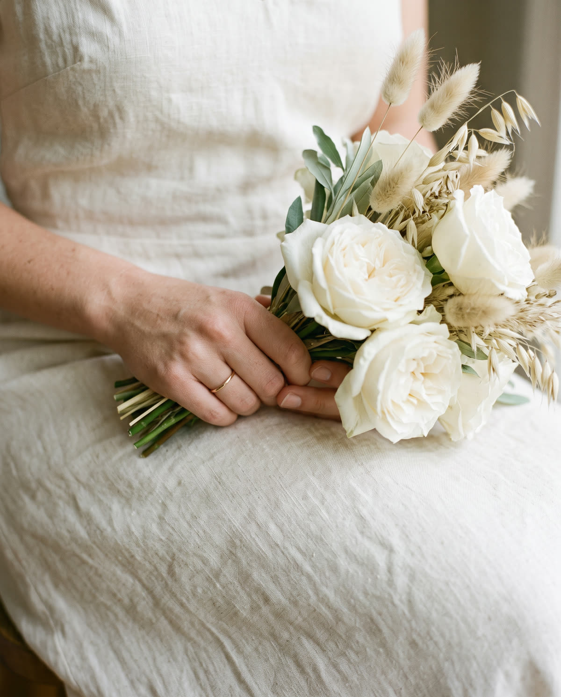
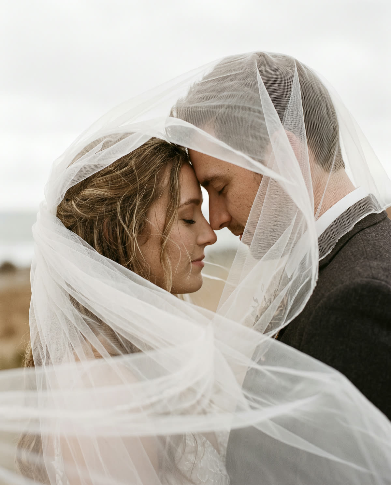
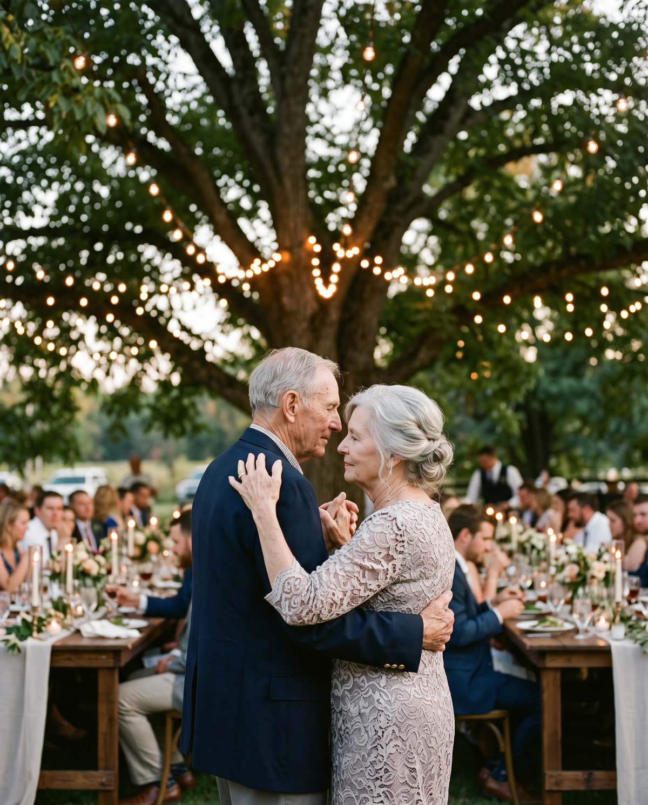
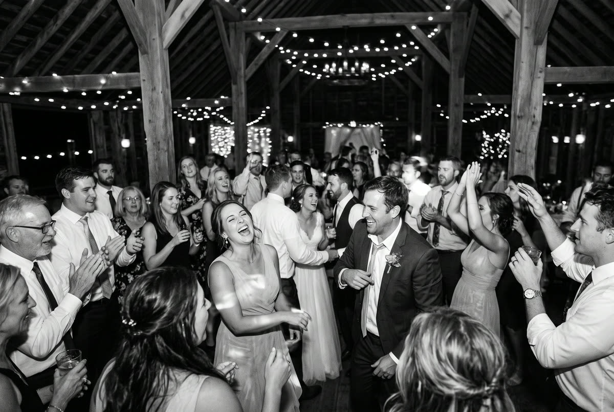
Despre mine
Sara Marin, fotograf din 2016
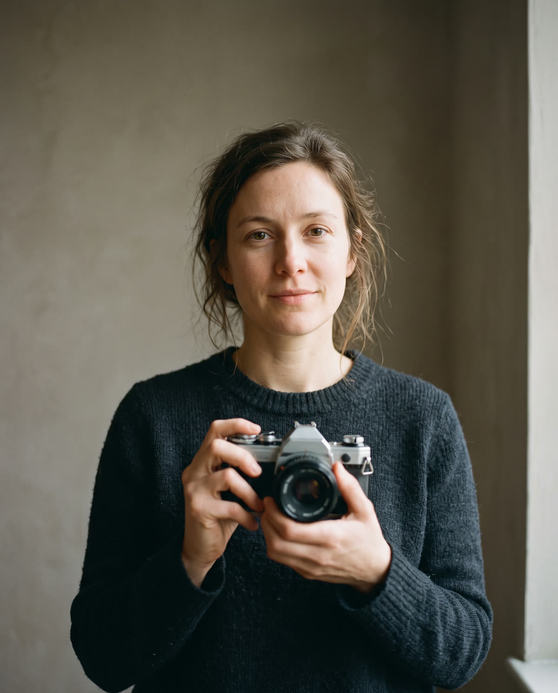
Am învățat să fotografiez pe aparatul de film al bunicului. La fiecare nuntă sunt singură, de la pregătiri până la ultimul dans.
Răspund personal la fiecare mesaj.
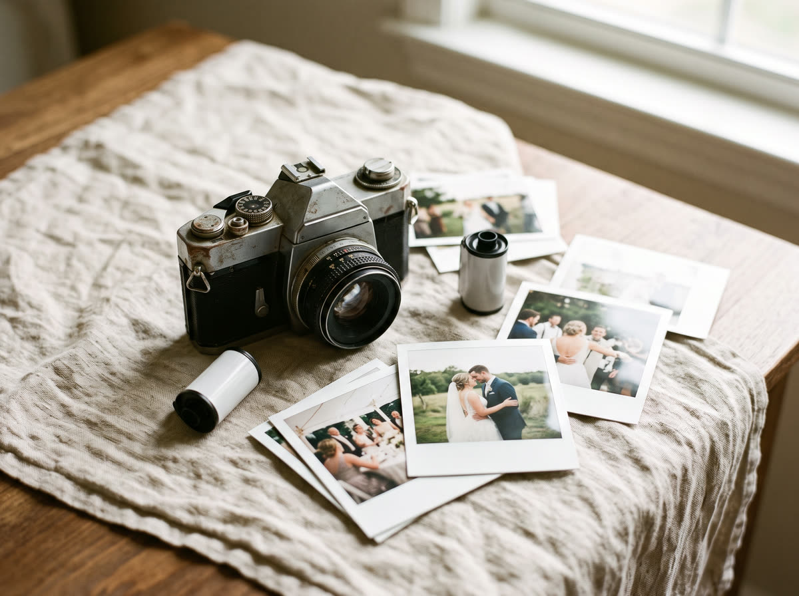
- Din: 2016
- Zona: Timișoara, Banat și oriunde în țară
- Livrare: galerie online, în 4 săptămâni
- Limbi: română, engleză
Cere o ofertă
Spune-mi data, locul și ce vrei să fotografiem. Îți răspund în 24 de ore cu disponibilitatea și prețul.